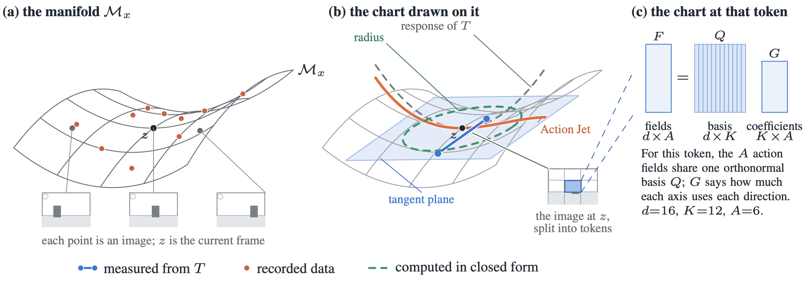

One encoder pass and one coefficient extraction per state. Every
candidate action after that is arithmetic on tensors already in
memory.
Abstract
World models are a powerful means of reasoning and planning for a
variety of applications including robotics. However, many of these
world models such as video generation models are high dimensional
and computationally expensive, which limits the number of action
candidates that can be evaluated by a planner. We show that this
cost is avoidable for planners over short horizons which only need
local information with respect to the current state.
For a fixed state, the frames reachable by varying a
low-dimensional action, a camera movement or an end-effector
command, lie on a low-dimensional manifold. We estimate the local
shape of that manifold directly via a network trained to estimate
how each image region moves per unit of each action axis,
supervised by data collected from samples by the generator. A
correction head fit to trajectory data describes the shape of this
manifold region up to a third-order Taylor polynomial. We call the
network estimating the Taylor polynomial describing the manifold
shape an action jet, and compute its radius of validity in
closed form.
By traversing this approximation of the local manifold shape, we
only have to perform inference once per state for any number of
candidate actions. We achieve over 100× speedup of
same-length trajectory rollouts compared to the source generators,
and this gap widens with the number of candidates a planner
evaluates. We measure against state-of-the-art action-conditioned
generators: IRASim and WorldGym on BridgeData V2, a real 7-DoF
manipulation benchmark, and DepthSplat, LagerNVS and FrameCrafter
on DL3DV scenes. Because only the first-order term comes from the
generator and the rest from the data, the action jet also predicts
held-out frames more accurately than IRASim, the generator that
supplied its tangent, at short horizons and at roughly
104× less compute.
1.8ms
per candidate action, with the network run
twice per state no matter how many candidates are scored
0.80
tangent agreement between charts distilled
from two unrelated generators, against a permutation null of
0.00
99%
of single-step robot transitions fall inside
the chart's own closed-form validity radius
+1.2dB
over the generator that supplied the tangent,
at the next frame, at ~104× less compute
Charting the action-conditioned data manifold
Latent image states live in the space of a frozen image
autoencoder (E, D): z = E(x).
We split z into N tokens, each a 2×2 block of latent
pixels, so every token is a vector in
ℝd. For an image state x, let
Mx be the set of latent states reachable from
x by actions in a neighbourhood U of zero. This is a
smooth surface of dimension at most A, fixed by the data
distribution including the dynamics. It is a property of the
dataset, not of any model.
A generator T trained on that data defines
φx(a) =
E(T(x, a)), and where it has
learned the data,
φx(U) ≈
Mx: an approximate chart of the
action-conditioned data manifold. The local shape of
Mx is its Taylor expansion,
φx(a) =
φx(0)
+ ∑iai Ji
+ 12∑i,jai aj Hij
+ 16∑i,j,kai aj ak Cijk
+ …
whose first-order fields Ji =
∂φx / ∂ai
span the tangent space. An Action Jet is a network that
emits a truncation of that expansion from the current frame, with
the first order measured from a generator and everything above it
fit to data.

Method overview. Fill colour marks what supervises each
part: the generator's measured Jacobians, recorded transitions, or
no network at all. The generator is queried only once, offline.
1. Probe the generator for the action Jacobian
For each generator, state and axis i we render at
±δi along that axis alone, encode both
renders, and difference them into the field
Ji =
z+δi − z−δi2δi
∈ ℝN×d
Ji is the estimated
action Jacobian for axis i, and it says how each token moves
per unit of that axis. Both renders show the same room, table and
robot, and subtracting removes all of it, so the measurement
records the generator's response to the action rather
than the quality of its rendering. For stochastic generators we
average over samples. The probe needs no gradients, so any model
that maps a state and an action to an image can be probed,
including multi-step diffusion samplers.
2. Estimate the first-order term with the geometry encoder
Probing costs two generator passes per axis per state, which a
planner scoring many candidates cannot afford. We therefore train
a geometry encoder that predicts the action Jacobian from
the current frame in one forward pass, supervised by the probed
fields.
A ViT reads zt and one context frame
zt−1 as N tokens. For each
token n it emits a feature vector hn, used
later by the correction head, a basis Bn ∈
ℝd×K, and coefficients
Gn ∈ ℝK×A.
Taking Qn to be the Q factor of the reduced
QR decomposition of Bn makes
Qn⊤Qn =
IK hold by construction, and token n's
motion per unit of axis i is predicted as
Fi,n = QnGnei.
All A axes share that one rank-K frame, which makes
the output a tangent space rather than a set of unrelated
fields. The encoder minimises
where the norms are taken over all tokens and
(I − QQ⊤) acts
token-wise. Normalising each axis by its own energy keeps the axes
that cause large image motion from dominating the gradient; the
second term prices the part of each probed field that lies outside
the predicted frame. Stacking tokens gives the encoder's estimate
of Ji, and with it the first-order truncation
φx(1)(a)
= zt +
A∑i=1ai Fi
3. Fit the higher orders to the data
The first-order chart is a plane and Mx is a
curved surface. A correction head adds the second- and
third-order terms. Unlike the geometry encoder it is not
supervised by the generator: it is trained on recorded
transitions, so every term above first order is fit to the data
itself. For each token it reads the encoder feature
hn and a noise draw εn
and emits the coefficient fields of
r(a, ε) =
∑iai Li
+ 12∑i,jai aj Hij
+ 16∑i,j,kai aj ak Cijk
+ ∑iai U(1)i(ε)
+ ∑i,jai aj U(2)ij(ε)
where every field lies in ℝN×d.
Hij and Cijk are the head's
estimates of the second- and third-order coefficients,
Li corrects the first-order term, and
U(1), U(2) are
noise-conditioned fill fields for disoccluded content,
which is a discontinuous function of the action and has no
polynomial form. The prediction for action a is
with r(a, ε)
= r(a, ε) −
r(0, ε), which guarantees
z(0, ε) =
zt. The head is trained with the encoder frozen.
Every coefficient field is computed from h and
ε, and never from a. That is the
property the whole method rests on: the fields are extracted once
per state, and each candidate action after that costs only a
contraction against tensors already in memory. It is also why an
action jet can be more accurate than the generator it came from.
The generator's contribution ends at first order, supplying the
directions in which the image can move at each state, including
along single axes the dataset never isolates. Recorded data sets
every coefficient above it.
4. Query candidate futures inside the radius of validity
The estimate does not hold for actions that move the state too
far. A camera moved somewhere with no visual overlap with the
current scene cannot have its new view predicted from the old one,
and computationally, a Taylor polynomial stops being accurate far
from its expansion point. Because the prediction is an explicit
polynomial in a, that boundary can be computed from the
chart's own coefficients rather than found by a sweep.
Let u be a unit direction in normalised action units. The
predicted displacement from zt at step length
r is exactly a cubic,
P(r) =
z(ru) − zt
= αr + βr2 + γr3
with α =
∑iui (Fi + Li),
β =
12H[u,u] and γ =
16C[u,u,u]. Writing
p1 = ‖α‖,
p2 = ‖β‖ and
p3 = ‖γ‖, the
radius of validity is the positive root of
p2r2 +
p3r3 =
p1r,
r* =
−p2 + √p22 + 4p1p32p3
past which the nonlinear terms can be as large as the linear one.
Inside r* any number of further candidate actions
can be simulated from the current state; outside it, a new chart
has to be extracted. The whole quantity costs six evaluations of
the correction head and no rendering. It is a property of the
student alone, with no generator and no ground-truth
frame anywhere in it, so it is available per state at inference
time.
On BridgeData V2 we check it against real held-out frames
with no generator in the loop. 99% of single-step transitions and
67% of four-step ones fall inside r*, and the
chart stops beating the do-nothing baseline at
1.89 r*. Repeating the whole measurement
on a second chart built from a different generator, with nearly
orthogonal tangent fields and translation gains a factor of ten
apart, puts the crossing at 2.04 r*. The
two agree about where they stop working to within 18%.
One extraction, any number of candidates
Screening candidate actions with a world model has one shape:
every candidate costs a full forward simulation. An action jet
pays two network evaluations per state regardless of K,
because the action never enters the network. Sixteen candidates
cost 1.4× one and sixty-four cost 3.1×, so the cost
per candidate falls as breadth grows. Ranking happens in
latent space, so the decoder runs once rather than K times.
world model
NFE / state
K=1
16
64
ms / cand
IRASim
25K
5478
91431
—
5478
WorldGym
40K
1240
17501
—
1094
Action Jet, composed
8
87.8
604.3
2347.9
36.7
Action Jet, single
2
37.9
54.0
117.5
1.8
Measured cost in milliseconds of evaluating K candidate
four-step futures at one state, identical hardware.
Breadth search on three held-out robot states. A
goal-conditioned policy proposes candidate action chunks; the action
jet predicts every outcome from a single extraction, and the
selector keeps the one whose predicted future is closest to the
target.
More accurate than the generator it came from
Only the first order comes from the generator, so the student is
not capped by it. On held-out BridgeData V2 validation
episodes the chart predicts the next frame better than IRASim, the
generator that supplied its tangent, and is level at gap 2.
From gap 3 IRASim leads by about 1 dB, which is the cost
of composing steps.
world model
PSNR ↑
LPIPS ↓
1
2
3
4
1
2
3
4
copy-frame (control)
24.48
21.48
20.04
19.19
.051
.084
.105
.121
WorldGym
23.80
21.10
19.70
18.86
.059
.093
.118
.137
IRASim (source generator)
23.34
22.37
21.64
21.12
.101
.116
.127
.136
Action Jet
24.21
22.07
20.67
19.67
.074
.110
.144
.177
+ fine-tuned decoder
24.57
22.42
21.07
20.11
.073
.111
.143
.170
Open-loop rollouts on BridgeData V2 validation episodes under
the recorded actions. The copy-frame control leads LPIPS because
consecutive Bridge frames barely differ, which is why the radius
measurement scores against that control explicitly.
Held-out rollout under the recorded actions.Held-out rollout under the recorded actions.
Two generators, one manifold
An extracted chart could describe the dataset's manifold or only
the generator we probed. The comparison that separates them is
well posed because of where supervision enters: the geometry
encoder sees only generator probes, so the tangent field
is the one part of the model that the objection “both were
trained on the same real frames” cannot reach.
On DL3DV, two charts distilled from architecturally unrelated
novel-view generators — DepthSplat, explicit Gaussian
splatting on estimated depth, and LagerNVS, a transformer
initialised from VGGT — agree at mean per-axis cosine
0.80 against a state-permutation null of 0.00. Their
generators agree at 0.75, and because both generators are
deterministic that 0.75 is an unattenuated ceiling rather than a
noise-limited one. On four of six axes the students agree with
each other more than their generators do.
tx
ty
tz
rx
ry
rz
mean
DL3DV — DepthSplat and LagerNVS, deterministic generators
students
.77
.81
.77
.84
.82
.79
.80
teachers
.72
.73
.68
.69
.84
.86
.75
permutation null
.00
.00
.00
.00
.00
.00
.00
BridgeData V2 — IRASim and WorldGym
students
−.02
.06
.08
−.09
.09
.12
.04
teachers
−.02
.03
.05
−.04
.04
.05
.02
Tangent agreement between charts built from different generators.
Where the generators agree, the students recover the shared
structure and agree at least as well. Where the generators
disagree, on Bridge, the students inherit the disagreement rather
than manufacturing consensus — which is what makes the DL3DV
result evidence about the data rather than about shared
architecture.
Tracing the manifold
Each clip below walks the demonstrated action out from one
extracted chart, on a different held-out episode. The surfaces are
measured patches of Mx, four tangent pairs at
once: the flat grey sheet is the first-order chart alone, the
coloured sheet adds the correction head, and the marker tracks the
current step. The frames beside them are decoded from that same
single extraction. No network is re-run anywhere in the sweep.